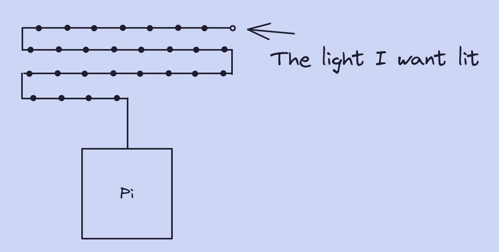
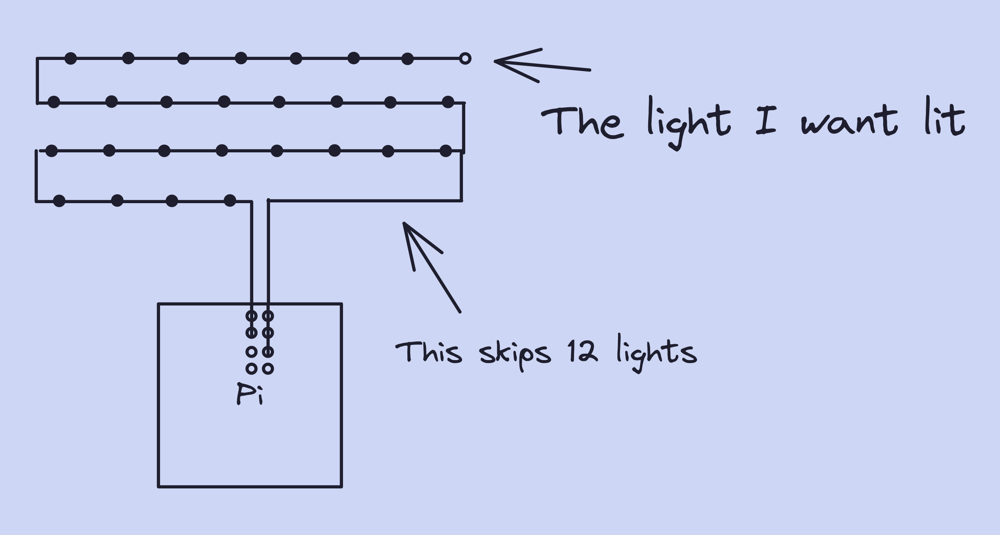

Orion
Andrews
Andrews
Doubled
Lines
Lines
Doubling the data bandwidth of the LEDs
Doubled Lines
The last real part of the lighting for this project (for
now) comes in the form of an optimization. At this point, it
was really slow to get data all the way to the end of the
strip of lights (picture to explain). Now, PWM is really
fast, but it doesn't really get to shine when there are
microcontrollers that have to stop the data, process it, and
pass it on again at every light. They takes AGES
(microseconds) to get anything done, so it seems natural to
try to bypass them. My thought was simple, why not use two
different data lines to pass information and section the
lights into even parts, that way I can simultaneously pass
data into 150-light sections, HALVING the time it takes for
the lights to get their information.
Sadly, in the code itself, you have to check whether a light is of a certain index, and that alone is enough to account for the time saved. However, there are more than just speed improvements to be had here. The lights use a combination of power from an external power supply with the 5 volts supplied from the raspberry pi's GPIO pins, by separating the lights into two sections, I effectively double the amount of power I can put into the lights, leading them to be brighter and to flicker less. Also, it means that I can use fewer raspberry pis to control more lights (half as many to be exact).
But this is all theory and I needed to put it to the test.

Sadly, in the code itself, you have to check whether a light is of a certain index, and that alone is enough to account for the time saved. However, there are more than just speed improvements to be had here. The lights use a combination of power from an external power supply with the 5 volts supplied from the raspberry pi's GPIO pins, by separating the lights into two sections, I effectively double the amount of power I can put into the lights, leading them to be brighter and to flicker less. Also, it means that I can use fewer raspberry pis to control more lights (half as many to be exact).
But this is all theory and I needed to put it to the test.
Here is the issue. When I created the code to split the
output into two data lines, something strange happened.
Basically, I had the code to show all of the updated lights
on line one run before showing the updated lights on line
two (the code runs fast enough that there is not a noticable
delay), but the two outputs overrode the other line. This
would cause, say, the bottom 150 lights to update both
halves and the top 150 lights would update both halves as
well. It turns out that while the raspberry pi has multiple
(5+) dataouts (GPIO pins) that the lights can interpret,
there are only two LINES of output. Basically, GPIO 18 will
get the same signal as, say, GPIO 22, but GPIO 23 will have
a different signal as GPIO 18. A diagram would be best.
As you can see, there are two different lines that cover multiple output pins (the holes) and they produce individual outputs. Moving the wire vertically would not change the output thought it would change the pin number, moving horizontally would change the output and the pin number. So, you can only get 2 different outputs on the different lines, great, let's use some different pins and ... it still didn't work.
As you can see, there are two different lines that cover multiple output pins (the holes) and they produce individual outputs. Moving the wire vertically would not change the output thought it would change the pin number, moving horizontally would change the output and the pin number. So, you can only get 2 different outputs on the different lines, great, let's use some different pins and ... it still didn't work.

At this point, it had been a few days (about 5) and I
decided to turn to the library that all of this code is
written on. The library itself is really just a massive
compilation of C code as C was probably the best language to
write code that deals with PWM in. C is illegible, at least
for me, as someone who had, up to this point, dealt
exculsively in highly abstracted high-level languages. For
this, I had to employ my father. After some small lessons as
well as a doomscroll through the code, we found several
hints to the existence of multi-line functionality.
After a couple days, while having a look at the issue, my father tried a simple package reinstall. And that was it. We tested the lights again and the lights were being properly separated into their individual lines. I have added a video with me goofing around with the separate data lines.
At first, they run normally with two lines, then I take out the line for the bottom half to see them pause. Then I plug the 5 volt power line into the dataline. The voltage waveform is not as managed as it is for PWM and so the data being sent is just about as random as you can get. Since the microcontrollers on each LED only know 24 bit color values, they take a truly random value. I then plug them back in normally and look at the result.
After a couple days, while having a look at the issue, my father tried a simple package reinstall. And that was it. We tested the lights again and the lights were being properly separated into their individual lines. I have added a video with me goofing around with the separate data lines.
At first, they run normally with two lines, then I take out the line for the bottom half to see them pause. Then I plug the 5 volt power line into the dataline. The voltage waveform is not as managed as it is for PWM and so the data being sent is just about as random as you can get. Since the microcontrollers on each LED only know 24 bit color values, they take a truly random value. I then plug them back in normally and look at the result.